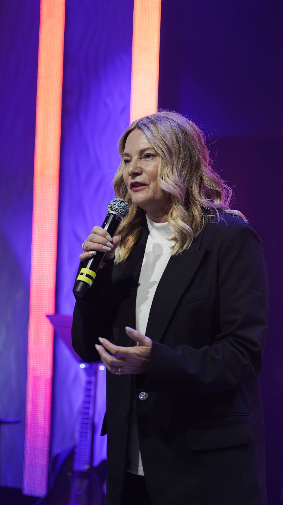

Church LA / CLA City — русскоязычная евангельская церковь в North Hollywood, Лос-Анджелес. Мы следуем за Иисусом, читаем Библию и рады знакомству и вашим вопросам.
CLA служит русскоязычным людям и семьям из России, Украины и других частей мира.
Если вы только начинаете знакомство с христианством или ищете церковь, будем рады вас видеть! Приходите знакомиться, общаться, задавать вопросы и узнавать больше о вере.

Леонид и Марина Малько начали руководить Church LA в 2021 году.
Сегодня мы продолжаем встречать русскоязычных людей и семьи в North Hollywood и со всего Лос-Анджелеса.
Леонид и Марина Малько руководят церковью и помогают гостям почувствовать себя как дома.
Леонид — старший пастор CLA с 2021 года. Церковь входит в объединение NHFC (LA International Christian Center).
С молодости он помогает открывать церкви, готовить церковных работников и участвует в миссиях. Служил в Армении и Сибири, руководил миссионерским центром в Москве и работал пастором в Лос-Анджелесе.
Сегодня он также помогает готовить церковных работников через Missionary Training Center (mtc.today).
Марина — со-пастор CLA и руководитель женской группы. Рукоположена в пасторы в Лос-Анджелесе в 2021 году.
Вместе с Леонидом много лет помогала открывать церкви и участвовала в миссиях. Занималась детским и христианским образованием, проводила женские встречи; изучала Библию и готовилась к миссиям в Швеции и Москве.
Делится размышлениями на основе Библии, молится с людьми и заботится о семьях, помогая им находить дружбу, поддержку и знакомиться с верой.
Мы держимся библейской христианской веры, открытой в Писании, и учимся применять её в жизни и заботе о людях.
Писание - богодухновенное, авторитетное Слово Бога и авторитет церкви для веры и жизни.
Иисус Христос - единственный путь к спасению.
Есть один Бог, вечно существующий в трёх Лицах: Отец, Сын и Святой Дух.
Спасение дается по благодати через веру в Иисуса Христа, не делами, традициями или личными заслугами.
Мы верим в настоящее действие Святого Духа, Который наполняет верующих и дает силу для служения.
Водное крещение - внешнее свидетельство внутренней веры. Причастие - регулярный акт памяти и завета.
Поместная церковь - община, призванная поклоняться, расти, служить и посылать.
Молитва занимает центральное место в жизни церкви.
Воскресное служение проходит на русском языке.
CLA служит русскоязычным людям и семьям из России, Украины и других частей мира.
Люди из разных стран и с разным опытом могут знакомиться здесь с верой и находить друзей.
Начните с визита, познакомьтесь с группой и помогайте, когда будете готовы.
Ваши способности, интересы и время могут быть полезны другим.